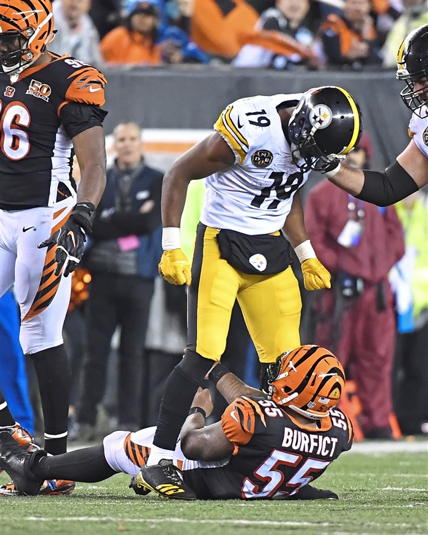

Draft and Trading
Smith-Schuster received an invitation to the NFL Combine and performed nearly all of the combine drills and positional drills except for the three-cone drill and short shuttle. He opted to attend USC's Pro Day and performed the short shuttle and three-cone drill. In addition, he performed the vertical and broad jump and improved his combine number on both. The Dallas Cowboys were the only team to hold a private workout with Smith-Schuster and showed heavy interest in him. He was ranked as the fourth best wide receiver in the draft by Sports Illustrated and ESPN, and ninth by NFLDraftScout.com and draft analyst Mel Kiper Jr. The Pittsburgh Steelers selected Smith-Schuster in the second round (62nd overall) of the 2017 NFL Draft. He was the youngest player selected in the 2017 Draft and was the 13th USC wide receiver drafted in the last 15 years. On May 17, 2017, the Steelers signed him to a four-year, $4.19 million contract with $1.84 million guaranteed and a signing bonus of $1.19 million. Smith-Schuster entered training camp competing with Sammie Coates, Darrius Heyward-Bey, Eli Rogers, Marcus Tucker, and Justin Hunter to be the Steelers' third option at wide receiver on their depth chart. He was named the sixth wide receiver on the Pittsburgh Steelers' depth chart to begin the regular season behind Antonio Brown, Martavis Bryant, Heyward-Bey, Rogers, and Hunter.
2017-2018 Season
In the Pittsburgh Steelers' season-opening victory over the Cleveland Browns, Smith-Schuster was credited with his first career start as a kick returner, returning one kick for four yards. In Week 2, Smith-Schuster recorded his first career reception and caught his first career touchdown on a four-yard pass from quarterback Ben Roethlisberger, as the Steelers defeated the Minnesota Vikings by a score of 26–9. During the Vikings game, Smith-Schuster became the youngest NFL player to score a touchdown since running back Andy Livingston in 1964. He also became the second youngest player in NFL history to catch a touchdown behind Arnie Herber, who was 60 days younger than Smith-Schuster when he caught a touchdown in 1930. During Week 7 against the Cincinnati Bengals, Smith-Schuster caught his third touchdown pass of the season, a 31-yard reception, becoming the first player in NFL history to score three touchdowns before the age of 21. On October 29, 2017, Smith-Schuster had a breakout performance and made a season-high seven receptions for 193 receiving yards and scored a 97-yard touchdown during a 20–15 victory on NBC Sunday Night Football against the Detroit Lions. The 97-yard touchdown reception was also the longest pass play in team history. It was Smith-Schuster's first career start at wide receiver, as he started in place of Martavis Bryant, who was benched by head coach Mike Tomlin after publicly asking for a trade. His 193 yards was second only to Jimmy Orr's 205 in 1958 for the most receiving yards by a Steelers rookie, and the most by any NFL rookie since Mike Evans' 209 in Week 11 of 2014. For his performance in Week 8, he was named AFC Offensive Player of the Week. In a Week 10 victory over the Indianapolis Colts, he recorded five receptions for 97 yards and his fifth touchdown of the season. During Monday Night Football against the Cincinnati Bengals in Week 13, Smith-Schuster was limited to 17 receiving yards, and committed two personal foul penalties, including a blindside hit on Vontaze Burfict. Nevertheless, the Steelers won 23–20. The next day, Smith-Schuster was suspended for one game for the hit on Burfict. Smith-Schuster returned in a Week 15 loss against the defending Super Bowl champion New England Patriots in which he finished with 117 receiving yards, including a 69-yard catch-and-run in the closing seconds of the fourth quarter. In a Week 17 game against the Cleveland Browns, he had a 96-yard kick return for a touchdown. He also had nine catches for 143 yards and one touchdown in that game. With his performance in Week 17, Smith-Schuster became the youngest player in NFL history to have over 1,000 all-purpose yards. He was also named AFC Special Teams Player of the Week for his kick return touchdown. On December 28, 2017, it was announced Smith-Schuster was named Steelers rookie of the year. He finished the season with 58 receptions for 917 yards and seven touchdowns, with the latter two statistics leading all rookies. He was named the Polynesian Pro Football Player of the Year for 2017. The Steelers finished the 2017 with a 13–3 record and won the AFC North to earn a first-round bye as the #2-seed. In the Divisional Round against the Jacksonville Jaguars, Smith-Schuster was limited to three receptions for five yards and a late touchdown in the 45–42 loss.